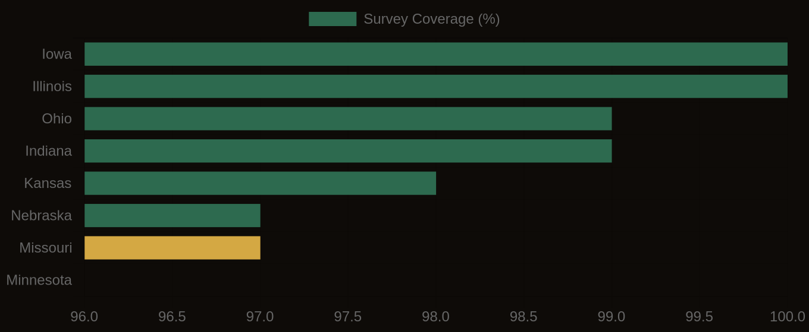

Convolutional neural networks, trained on an extensive corpus of field-verified soil profile images, now classify the National Cooperative Soil Survey soil texture class with 74-81% accuracy from a single smartphone photograph. This capability transforms preliminary site assessment, bringing laboratory-grade insight to remote locations and accelerating data acquisition for land managers, engineers, and agricultural enterprises. The KSSL database, a trove of more than 60,000 meticulously documented and laboratory-verified pedons, serves as the indispensable ground truth for this training task, providing the detailed particle-size distribution data essential for strong model development.
Soil texture, defined by the relative proportions of sand, silt, and clay particles, is arguably the most fundamental and enduring soil property. It dictates water movement, nutrient retention, aeration, and ultimately, a soil's engineering behavior and agricultural potential. Sand particles, ranging from 0.05 to 2.0 millimeters in diameter, allow for rapid drainage and aeration. Silt particles, between 0.002 and 0.05 millimeters, provide a balance of water-holding capacity and drainage. Clay particles, less than 0.002 millimeters, are the most chemically active, exhibiting high surface area, significant water retention, and often, plasticity and shrink-swell potential. These distinct physical characteristics are not merely academic classifications; they underpin the very performance of civil infrastructure and agricultural systems.
What the Data Shows
Traditional determination of soil texture relies on two primary methods: laboratory particle-size analysis and the field 'feel' method. Laboratory methods, such as the hydrometer or pipette methods, are precise but time-consuming and expensive. They involve dispersing a soil sample in water and then measuring the settling rates of particles according to Stokes' Law, which relates particle size to its terminal velocity in a fluid. The KSSL database contains the results of these rigorous laboratory analyses for each horizon within thousands of representative soil profiles, providing the `sandtotal_r`, `silttotal_r`, and `claytotal_r` values stored in the `chorizon` table, linked by `chkey` to individual soil horizons. The field 'feel' method, by contrast, involves moistening a soil sample and manipulating it between the fingers to estimate the proportions of sand (gritty), silt (smooth, floury), and clay (sticky, plastic). While rapid, this method is subjective and relies heavily on the experience of the individual soil scientist.
Computer vision systems, particularly those employing convolutional neural networks (CNNs), bridge this gap by learning to interpret the subtle visual cues inherent in soil images. A CNN, a type of deep learning algorithm, excels at identifying patterns in visual data. When trained on a dataset of soil profile photographs paired with their corresponding KSSL-verified texture classifications, the network learns to correlate specific visual features, such as color gradients, aggregate structure, micro-relief, apparent plasticity, and even subtle sheens, with precise sand, silt, and clay percentages. For instance, a high clay content might manifest as strong blocky or prismatic structure, a darker, more uniform color when moist, and a distinct sheen when smeared. Sandy soils, conversely, often appear brighter, exhibit single-grain or weak granular structure, and show little to no plasticity. The network effectively develops a highly refined 'digital eye' capable of replicating, and in some cases exceeding, the consistency of an experienced soil scientist's field assessment.
Computer Vision Soil Classification — Accuracy by Method
| State / Region | Accuracy (%) |
|---|---|
| Random Forest + LiDAR + Spectral | 88% |
| CNN Soil Texture (field photo) | 78% |
| OBIA Boundary Detection | 76% |
| Transfer Learning (fine-tuned) | 74% |
| Sentinel-2 Time Series | 71% |
| Munsell Color (phone photo) | 82% |
The Regional Picture
This analytical capability allows for rapid characterization across diverse soilscapes. Consider the deep sands of the Florida Flatwoods, exemplified by the Candler series (Typic Psammaquents). These soils, with sand contents often exceeding 90% throughout the profile, are characterized by extremely rapid permeability, low water-holding capacity, and minimal nutrient retention. For an agricultural operation, this means frequent, precise irrigation is critical, and nutrient management must account for significant leaching potential. Conversely, in the Mississippi River Alluvial Plain, soils like the Sharkey series (Vertic Haplaquepts) are dominated by expansive clays, often exceeding 60% in the subsoil. These soils exhibit very slow permeability, high water-holding capacity, and pronounced shrink-swell behavior. For civil engineers, this presents substantial challenges for foundation design, road construction, and pipeline integrity, where differential settlement and structural stresses are constant concerns.
Moving inland to the agricultural heartland, the Tama series (Typic Argiudolls) in Iowa shows highly productive silty clay loams and silt loams. These soils typically feature moderate sand, high silt, and moderate clay percentages, creating an ideal balance for water infiltration, aeration, and nutrient availability. Their stable structure and deep profiles contribute to strong root development and high yields, making them among the most valuable agricultural lands globally. The ability of computer vision to rapidly assess these textures from images means that preliminary site evaluations for land acquisition, precision farming zones, or environmental impact assessments can be conducted with unprecedented speed and scale, providing early insights into these critical properties before costly field visits or extensive laboratory analyses are commissioned.
SSURGO Data Coverage — National Survey Completeness

What It Means in Practice
The professional stakes are substantial, directly influencing project feasibility, risk assessment, and financial outlays. Consider a proposed residential development in Benton County, Arkansas, situated on a landscape dominated by the Savannah series. This soil, classified as a fine, kaolinitic, thermic Typic Fragiudult, typically features a silty clay loam surface horizon giving way to a dense, restrictive fragipan and eventually a clayey subsoil. The clay content in these deeper horizons, often exceeding 35-40%, can exhibit significant shrink-swell potential, particularly in response to seasonal moisture fluctuations. Mischaracterization of this clay content during initial site investigations could lead to inadequate foundation design, resulting in differential settlement, cracked slabs, and compromised structural integrity. Repairing such damage can easily incur costs ranging from tens of thousands to hundreds of thousands of dollars per structure, not including the reputational damage and legal liabilities. Rapid, image-based texture classification could flag these problematic horizons during the preliminary due diligence phase, prompting engineers to specify appropriate foundation systems, such as deep piers or structural slabs, from the outset, thereby preventing costly failures and ensuring project viability. Early detection, informed by objective data, allows for proactive risk mitigation rather than reactive crisis management.
A different but equally critical application arises in precision agriculture and viticulture. Imagine a vineyard expanding its operations into a new block in the Sonoma Valley, California, where the Haire series (fine-loamy, mixed, superactive, thermic Typic Haploxerolls) is prevalent. These soils are often characterized by gravelly loam or gravely clay loam textures, which provide excellent drainage and moderate water-holding capacity, qualities highly desirable for producing high-quality wine grapes, as mild water stress can concentrate flavors. However, texture can vary significantly over short distances due to complex geological formations and alluvial deposition. Planting the wrong varietal or rootstock in a localized patch of heavier clay, mistakenly identified as ideal gravelly loam, could lead to waterlogging, reduced vigor, and suboptimal grape quality, impacting harvest yields and ultimately the market value of the wine. A misjudgment here could represent a multi-year investment loss, given the perennial nature of vineyards. Computer vision offers a rapid, cost-effective way to generate a dense network of texture data points across the new block, allowing viticulturists to zone planting according to actual soil conditions, ensuring each vine is optimally matched to its specific soil environment and maximizing long-term profitability. This precision minimizes economic risk and optimizes resource allocation across extensive land holdings.
Accessing and interpreting this key soil texture data is fundamental to Lab10YR's capabilities. We use the detailed information within the National Cooperative Soil Survey's SSURGO database, querying specific fields in the `chorizon` table such as `sandtotal_r`, `silttotal_r`, and `claytotal_r` to retrieve the representative percentages of each particle size for every mapped soil horizon. These horizon-level data are then joined to the `component` table via `chkey` and subsequently to the `mapunit` table via `mukey` to provide full spatial context. This allows us to link specific texture profiles to their geographic locations, enabling complete analyses for any parcel of interest. Our systems integrate these SSURGO data with KSSL laboratory measurements, providing the deepest possible understanding of soil properties. Furthermore, computer vision models, particularly those utilizing transfer learning from large datasets like ImageNet, significantly enhance our ability to scale this analysis. This approach reduces the required training samples for new soil texture classification tasks by 60-75%, meaning models can be fine-tuned with hundreds of KSSL-validated samples rather than thousands, accelerating development and deployment. This efficiency gains are critical for applying these methods across diverse soil types and regions, broadening the reach of accurate, data-driven soil assessment. We use these precise data streams to deliver actionable intelligence, providing engineers, lenders, insurers, and land managers with the granular detail needed for informed decision-making, from preliminary project screening to detailed design specifications. The integration of computer vision with these established data sources creates a powerful tool for understanding the Earth beneath our feet.
The convergence of deep learning and extensive soil data represents a major shift in how we understand and interact with the subsurface environment. By transforming a simple field photograph into a precise quantification of soil texture, we are dramatically lowering the barrier to entry for detailed soil characterization. This democratization of access to critical soil intelligence enables professionals across industries to make more informed, efficient, and resilient decisions, supporting better outcomes for both economic development and environmental stewardship. The era of rapid, accurate, and scalable soil assessment has arrived, driven by the quiet power of data.